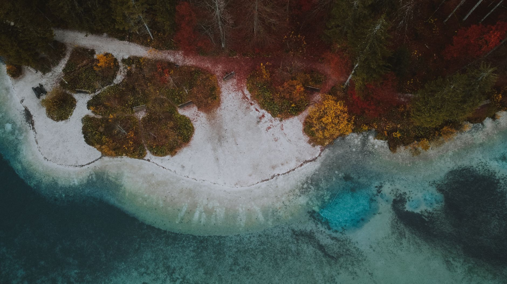
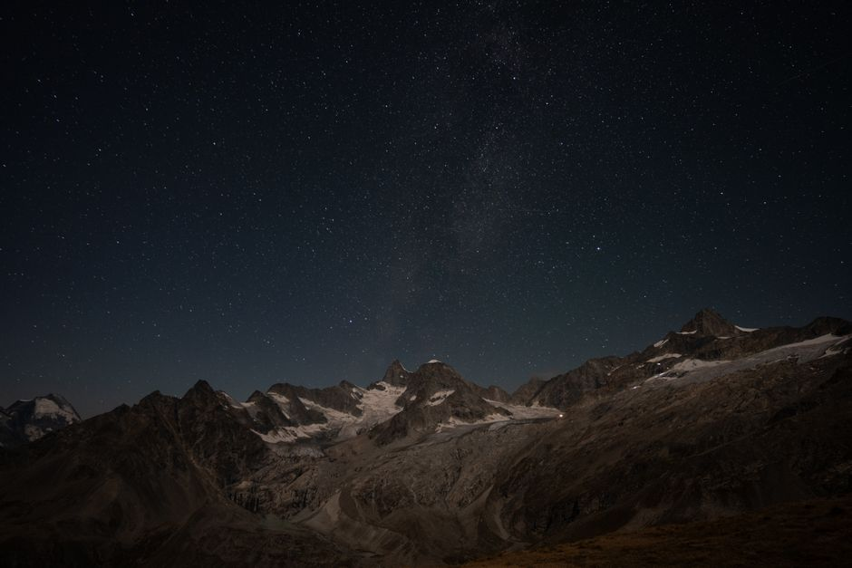

Custom geospatial programs
Programs built to run geospatial analysis for your site-specific project, including GeoAI. Your place and your question shape the work.
SITE-SPECIFIC DEVELOPMENT
Independent geospatial expertise
Custom geospatial programs and environmental analysis.
Built around your place, your data, your questions.
The expertise
I’m a freelance GIS and remote-sensing specialist. Through Sigrøn, I build programs for site-specific geospatial analysis and use satellite and drone data to explore environmental questions.
Tell me what you’re exploringPrograms built to run geospatial analysis for your site-specific project, including GeoAI. Your place and your question shape the work.
SITE-SPECIFIC DEVELOPMENTGeographic information and remotely sensed data, brought together to explore the questions that matter to your project.
SPATIAL ANALYSISEnvironmental analysis using satellite and drone data. A spatial perspective on the landscapes and environments you want to understand.
SATELLITE + DRONE DATAWork in exploration
From the sky above to the water below.
A look at the questions I’m exploring now.

Current projectA current dark skies project, bringing my interest in environmental analysis to the night sky.
 Ongoing exploration
Ongoing explorationI’m exploring water quality and cyanobacteria in Goksjø, and how satellite data, mapping and local observations can be used to detect patterns and track change over time.
The next exploration
I’m looking to take on more geospatial and environmental projects. Tell me about your site, your question and any data you already have.
A few details are a good place to start.